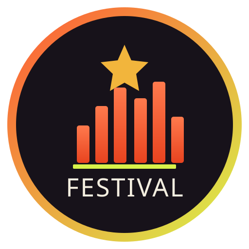

Spin to deal a festival, then place an act on a day.

Book the perfect line-upSpin a festival, draft acts on a budget, and build the perfect line-up.
The Perfect Festival is a free booking game. Spin a real festival and year — Glastonbury 2019, Coachella 2018, Tomorrowland — draft one act at a time from that edition, and build an 11-stage line-up: three headliners and a full undercard. The game projects your bill into a festival score and a touring run. Book a line-up strong enough and every date sells out: a flawless, sold-out tour.
Any act can play any stage — stages differ by size, not genre. Three headliners carry the most weight, the main stages less, the undercard least. So the real decision is who you put up top: a weak headliner drags the whole bill, while loading your biggest names into the headline slots is what carries a line-up. The same artist can't appear twice, even across different festivals. A line-up with genuine genre range also scores a little higher than a one-note bill.
You book the whole bill from one fixed budget of €12M, and every act has a booking fee that rises steeply with its draw power — from around €125k for a small act to well over €2M for a headliner. You can't simply buy the biggest name for every stage — the real game is hunting value: a bargain act with a great draw lets you afford a true headliner elsewhere. Spend it all on three superstars and your undercard collapses; spread it too thin and nothing headlines.
The top tier — a flawless bill within budget — is achievable but deliberately rare. Even sharp, value-savvy drafting only reaches it now and then; most line-ups land between a mid-bill weekend and a main-stage triumph.